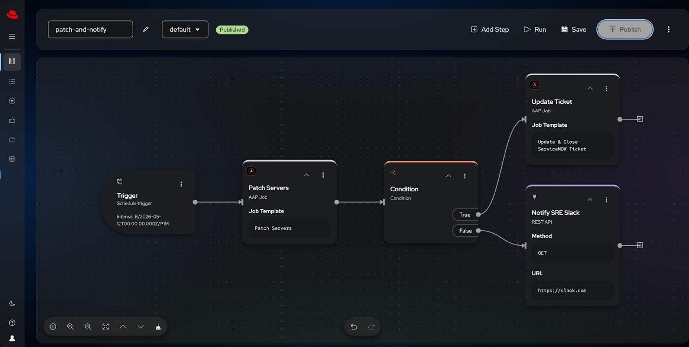

Getting Started with automation orchestrator
Red Hat Ansible Automation Platform introduces the automation orchestrator available as an add-on SKU.

What Are the Dependencies?
The automation orchestrator has two requirements before you can get started. First, it runs exclusively on Red Hat OpenShift Container Platform 4.14 or later, delivered as an operator through the Operator Lifecycle Manager; there is no VM-based or standalone deployment option. Second, it requires Red Hat Ansible Automation Platform 2.7 or later to enable job dispatch to the automation controller and single sign-on through automation gateway, leveraging OpenID Connect (OIDC).
| If either of these is not in place in your environment, that is your starting point before deploying automation orchestrator. |
In the chapters that follow, you will move from understanding these concepts to building and running real workflows of your own.